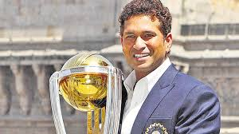

 Sachin Ramesh Tendulkar (/ˌsʌtʃɪn tɛnˈduːlkər/ (About this sound listen); born 24 April 1973) is a former Indian international cricketer and a former captain of the Indian national team, regarded as one of the greatest batsmen of all time. He is the highest run scorer of all time in International cricket. Tendulkar took up cricket at the age of eleven, made his Test debut on 15 November 1989 against Pakistan in Karachi at the age of sixteen, and went on to represent Mumbai domestically and India internationally for close to twenty-four years. He is the only player to have scored one hundred international centuries, the first batsman to score a double century in a ODI, the holder of the record for the most number of runs in both Test and ODI, and the only player to complete more than 30,000 runs in international cricket . Cricket world calls him Little Master or Master Blaster and often referred to as the God of Cricket by Indian cricket followers, Despite his reputation, he is known for his modesty and humility, once stating "I am not the God of cricket. I make mistakes, God doesn’t" In 2010, Time magazine included Sachin in its annual Time 100 list as one of the "Most Influential People in the World". In December 2012, Tendulkar announced his retirement from ODIs. He retired from Twenty20 cricket in October 2013 and subsequently retired from all forms of cricket on 16 November 2013 after playing his 200th Test match, against the West Indies in Mumbai's Wankhede Stadium. Tendulkar played 664 international cricket matches in total, scoring 34,357 runs.
PERSONAL INFORMATION
Contents
Tendulkar was born at Nirmal Nursing Home in Dadar, Bombay on 24 April 1973[citation needed] to a Maharashtrian[32][33] Rajapur Saraswat Brahmin family.[34] His father, Ramesh Tendulkar, was a well-known Marathi novelist and his mother, Rajni, worked in the insurance industry.[35] Ramesh named Tendulkar after his favourite music director, Sachin Dev Burman. Tendulkar has three elder siblings: two half-brothers Nitin and Ajit, and a half-sister Savita. They were Ramesh's children from his first marriage.[citation needed]Tendulkar played as a youngster with his brother, Ajit, for Sahitya Sahawas society’s cricket team at Bandra East. Ajit is credited by Sachin for playing a pivotal role in his life.[36] Ramakant Achrekar was impressed with Tendulkar's talent and advised him to shift his schooling to Sharadashram Vidyamandir (English) High School,[1] a school at Dadar which had a dominant cricket team and had produced many notable cricketers. Prior to this, Tendulkar had attended the Indian Education Society's New English School in Bandra (East).[37] He was also coached under the guidance of Achrekar at Shivaji Park in the mornings and evenings.[38] Tendulkar would practice for hours on end in the nets. If he became exhausted, Achrekar would put a one-rupee coin on the top of the stumps, and the bowler who dismissed Tendulkar would get the coin. If Tendulkar passed the whole session without getting dismissed, the coach would give him the coin. Tendulkar now considers the 13 coins he won then as some of his most prized possessions.[39] He moved in with his aunt and uncle, who lived near Shivaji Park, during this period, due to his hectic schedule.
On 14 November 1987, Tendulkar was selected to represent Bombay in the Ranji Trophy, India's premier domestic First-class cricket tournament, for the 1987–88 season. However, he was not selected for the final eleven in any of the matches, though he was often used as a substitute fielder.[37] He narrowly missed out on playing alongside his idol Gavaskar, who had retired from all forms of cricket after the 1987 Cricket World Cup.[37] A year later, on 11 December 1988, aged 15 years and 232 days, Tendulkar made his debut for Bombay against Gujarat at home and scored 100 not out in that match, making him the youngest Indian to score a century on debut in first-class cricket.[50] He was handpicked to play for the team by the then Bombay captain Dilip Vengsarkar after watching him easily negotiating India's best fast bowler at the time, Kapil Dev, in the Wankhede Stadium nets,[1] where the Indian team had come to play against the touring New Zealand team. He followed this by scoring a century in his first Deodhar and Duleep Trophies, which are also Indian domestic tournaments.[51] Tendulkar finished the 1988–89 Raji Trophy season as Bombay's highest run-scorer. He scored 583 runs at an average of 67.77, and was the eighth highest run-scorer overall.[52] He also made an unbeaten century in the Irani Trophy match against Delhi at the start of the 1989–90 season, playing for the Rest of India.[53] Sachin was picked for a young Indian team to tour England twice, under the Star Cricket Club banner in 1988 and 1989.[54] In the famous 1990–91 Ranji Trophy final, in which Haryana defeated Bombay by two runs after leading in the first innings, Tendulkar's 96 from 75 deliveries was a key to giving Bombay a chance of victory as it attempted to chase 355 from only 70 overs on the final day.[55]His first double century (204*) was for Mumbai while playing against the visiting Australian team at the Brabourne Stadium in 1998.[1][56] He is the only player to score a century on debut in all three of his domestic first-class tournaments (the Ranji, Irani, and Duleep Trophies).[57] Another double century was an innings of 233* against Tamil Nadu in the semi-finals of the 2000 Ranji Trophy, which he regards as one of the best innings of his career.[58][59][60]
Raj Singh Dungarpur is credited for the selection of Tendulkar for the Indian tour of Pakistan in late 1989,[62] after one first class season.[63] The Indian selection committee had shown interest in selecting Tendulkar for the tour of the West Indies held earlier that year, but eventually did not select him, as they did not want him to be exposed to the dominant fast bowlers of the West Indies so early in his career. Tendulkar made his Test debut against Pakistan in Karachi in November 1989 aged 16 years and 205 days. He made 15 runs, being bowled by Waqar Younis, who also made his debut in that match, but was noted for how he handled numerous blows to his body at the hands of the Pakistani pace attack.[64] In the fourth and final Test in Sialkot, he was hit on the nose by a bouncer bowled by Younis, but he declined medical assistance and continued to bat even as he gushed blood from it.[65] In a 20-over exhibition game in Peshawar, held in parallel with the bilateral series, Tendulkar made 53 runs off 18 balls, including an over in which he scored 27 runs (6, 4, 0, 6, 6, 6) off leg-spinner Abdul Qadir.[66] This was later called "one of the best innings I have seen" by the then Indian captain Krishnamachari Srikkanth.[67] In all, he scored 215 runs at an average of 35.83 in the Test series, and was dismissed without scoring a run in the only One Day International (ODI) he played.[68][69] Thus Sachin Tendulkar became the youngest player to debut for India in Tests at the age of 16 years and 205 days and also the youngest player to debut for India in ODIs at the age of 16 years and 238 days.[70][71]The series was followed by a tour of New Zealand in which he scored 117 runs at an average of 29.25 in Tests including an innings of 88 in the second Test.[72] He was dismissed without scoring in one of the two one-day games he played, and scored 36 in the other.[73] On his next tour, a summer tour to England of 1990, on 14 August, he became the second youngest cricketer to score a Test century as he made 119 not out in the second Test at Old Trafford in Manchester, an innings which contributed to a draw and saved India from certain defeat in the match.[65] Wisden described his innings as "a disciplined display of immense maturity" and also wrote:[74]He looked the embodiment of India's famous opener, Gavaskar, and indeed was wearing a pair of his pads. While he displayed a full repertoire of strokes in compiling his maiden Test hundred, most remarkable were his off-side shots from the back foot. Though only 5ft 5in tall, he was still able to control without difficulty short deliveries from the English pacemen.Tendulkar further enhanced his reputation as a future great during the 1991–92 tour of Australia held before the 1992 Cricket World Cup, that included an unbeaten 148 in the third Test at Sydney, making him the youngest batsman to score a century in Australia. He then scored 114 on a fast, bouncing pitch in the final Test at Perth against a pace attack comprising Merv Hughes, Bruce Reid and Craig McDermott. Hughes commented to Allan Border at the time that "This little prick's going to get more runs than you, AB."[75]
Following poor performance in the 2012 series against England, Tendulkar announced his retirement from One Day Internationals on 23 December 2012, while noting that he will be available for Test cricket.[254][255] In response to the news, former India captain Sourav Ganguly noted that Tendulkar could have played the up-coming series against Pakistan, while Anil Kumble said it would be "tough to see an Indian (ODI) team list without Tendulkar's name in it", and Javagal Srinath mentioned that Tendulkar "changed the way ODIs were played right from the time he opened in New Zealand in 1994".[256]After playing a Twenty20 International in 2006 against South Africa, he said that he would not play the format again.[257] He announced his retirement from the IPL after his team, Mumbai Indians, beat Chennai Super Kings by 23 runs at the Eden Gardens in Kolkata on 26 May to win the Indian Premier League 2013.[30] He retired from Twenty20 cricket and limited-overs cricket, after playing the 2013 Champions League Twenty20 in September–October 2013 in India for Mumbai Indians.[258]On 10 October 2013 Tendulkar announced that he would retire from all cricket after the two-Test series against West Indies in November.[259][260] On his request, the BCCI arranged that the two matches were played at Kolkata and Mumbai so that the farewell happened at his home ground.[261][262] He scored 74 runs in his last Test innings against West Indies, thus failing short by 79 runs to complete 16,000 runs in Test cricket, the next man to bat after him was the future captain Virat Kohli.[31][263] The Cricket Association of Bengal and the Mumbai Cricket Association organised events to mark his retirement from the sport.[264][265] Various national and international figures from cricket, politics, Bollywood and other fields spoke about him in a day-long Salaam Sachin Conclave organised by India Today.[266][267]In July 2014, he captained the MCC side in the Bicentenary Celebration match at Lord's.[268] In December 2014, he was announced ambassador of the ICC Cricket World Cup 2015 event.[269][270] It is his second term as he has already held the ambassador of the previous ICC Cricket world cup 2011.[271][272] So he is heading the ambassador position of the ICC Cricket world cup in consecutive terms of the cricket world cup (2011 and 2015).
Tendulkar was made the icon player and captain for his home side, the Mumbai Indians in the inaugural Indian Premier League Twenty20 competition in 2008.[273] As an icon player, he was signed for a sum of US$1,121,250, 15% more than the second-highest paid player in the team, Sanath Jayasuriya.[274]In 2010 edition of Indian Premier League, Mumbai Indians reached the final of the tournament. Tendulkar made 618 runs in 14 innings during the tournament, breaking Shaun Marsh's record of most runs in an IPL season. He was declared player of the tournament for his performance during the season. He also won Best Batsman and Best Captain awards at 2010 IPL Awards ceremony.[275] Sachin has scored more than 500 runs in IPL in two different seasons as a captain.[276]Sachin Tendulkar captained Mumbai Indians in 4 league matches of second edition of the league. He scored 68 in the first match and 48 against Guyana. But Mumbai Indians failed to qualify for semifinals after losing the initial two matches. Tendulkar scored 135 runs.[277]In the 2011 IPL, against Kochi Tuskers Kerala, Tendulkar scored his maiden Twenty20 hundred. He scored 100 not out off 66 balls. In 51 matches in the IPL Tendulkar has scored 1,723 runs, making him the second-highest run-scorer in the competition's history.[278] In 2013, Sachin retired from Indian Premier League and currently in 2014 he is appointed as the Mumbai Indian Team's 'Icon'.[279][280][281]
On 24 May 1995, Tendulkar married Anjali Mehta (b. 1967), a paediatrician of Gujarati origin, whom he had first met in 1990.[338][339][340][341] They have a daughter and a son, Arjun, whose skills in cricket as a teenager have been receiving attention.BeliefsTendulkar is a practising Hindu. He is a devotee of the deity Ganesha and was a disciple of the guru Sathya Sai Baba of Puttaparthi, whom he visited on several occasions.[344][345][346] In 1997, Tendulkar captained the Indian National side, playing against a World Eleven team, in the Unity Cup which was held at the Sri Sathya Sai Hill View Stadium in Puttaparthi, in Baba's presence.[347][348] The death of Sai Baba on Tendulkar's 38th birthday caused him to cancel his celebrations.[349][350] The cricketer is also known to celebrate Ganesh Chaturthi at home and frequently visits temples during night when it is calm and quiet.Business interestsTendulkar's popularity has led him to be a pioneer in India on cricket business dealings when he signed a record sports management deal with WorldTel in 1995, the value of the deal being ₹30 crore (US$4.4 million) over five years.[353][354] His next contract with WorldTel in 2001 was valued at ₹80 crore (US$12 million) over five years.[355] In 2006, he signed a contract with Saatchi and Saatchi's ICONIX valued at ₹180 crore (US$26 million) over three years.Tendulkar has opened two restaurants: Tendulkar's[357] (Colaba, Mumbai) and Sachin's[358] (Mulund, Mumbai) and Bangalore. Tendulkar owns these restaurants in partnership with Sanjay Narang of Mars Restaurants.[citation needed]Tendulkar co-owns the Kochi ISL team in the Indian Super League Football in association with PVP Ventures owned by Prasad V Potluri. The team has been named as Kerala Blasters after his nickname "Master Blaster".[359][360][361] He also jointly owns the badminton team Bengaluru Blasters which participates in the Premier Badminton League.In 2013, Tendulkar was listed at 51st position in Forbes' list of world's highest-paid athletes, with his total earnings estimated to be USD 22 million.[362] In October 2013, the net worth of Tendulkar was estimated at USD 160 million by Wealth-X, making him India's wealthiest cricket player.Commercial endorsementsSachin Tendulkar has been sponsored by several brands throughout his career including Boost (1990–present),[365] Pepsi (1992–2009),[366] Action Shoes (1995–2000),[367] MRF (1999–2009),[368] Adidas (2000–10), Britannia (2001–07),[369] Fiat Palio (2001–03),[370] TVS (2002–05),[371] ESPN Star Sports (2002–present),[372] Sunfeast (2007–13),[373] Canon (2006–09),[374] Airtel (2004–06),[375] Rorito (2016-),[376] G-Hanz (2005–07),[377] Sanyo BPL (2007–present),[378] Toshiba (2010–present),[379] Colgate-Palmolive,[380] Philips,[380] VISA,[380] Castrol India (2011–12),[381] Ujala Techno Bright,[382] Coca-Cola (2011–13)[383] and Musafir.com (2013–present).[384]He has also been a spokesperson for National Egg Coordination Committee (2003–05),[385] AIDS Awareness Campaign (2005)[386] and Luminous India (2010–present).[387]Rajya Sabha nominatioIn April 2012, Tendulkar accepted the Rajya Sabha nomination proposed by the President of India and became the first active sportsperson and cricketer to have been nominated.[24][388] Former cricketers Sanjay Manjrekar,[389] Ajit Wadekar, Madan Lal[390] expressed their surprise over this move. He took the oath of office on 4 June.[391] He refused to take the bungalow allotted to him in New Delhi calling it "waste of taxpayers' money" as he resides in Mumbai.[392] He met with some controversy over his attendance at Rajya Sabha proceedings.[393] Tendulkar has also been accused of not using the development fund Rajya Sabha members receive.[394]PhilanthropyTendulkar sponsors 200 underprivileged children every year through Apnalaya, a Mumbai-based NGO associated with his mother-in-law, Annabel Mehta.[395][396] A request by him on Twitter raised ₹1.02 crore (US$150,000) through Sachin's crusade against cancer for the Crusade against Cancer foundation.[397][398] Sachin Tendulkar spent nine hours on the 12-hour Coca-Cola-NDTV Support My School telethon on 18 September 2011 that helped raise ₹ 7 crore – ₹ 2 crore more than the target – for the creation of basic facilities, particularly toilets for girl students, in 140 government schools across the country.[399]